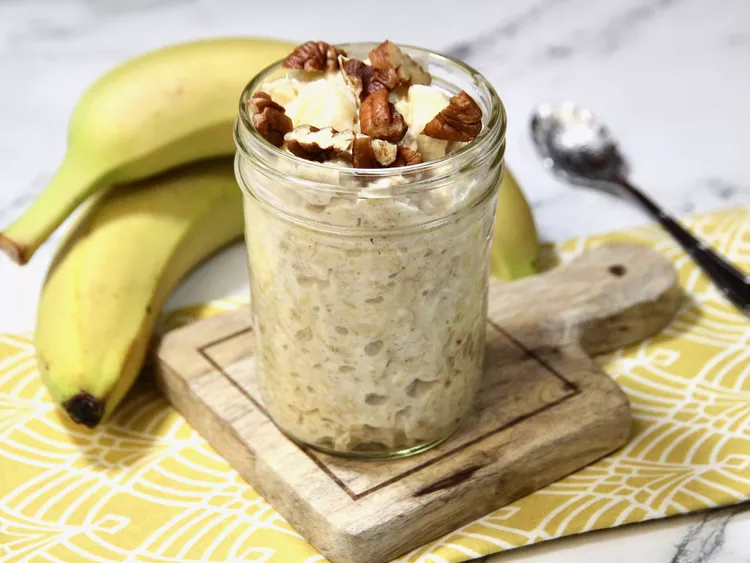

Overnight Pineapple-Banana Oatmeal

Description
Overnight oatmeal flavored with pineapple, banana, and pecans. Healthy, quick, easy, and packed with nutrients. Found on allrecipes.com.
Ingredients
- 2 cups old fashioned rolled oats
- 1 1/2 cups unsweetened almond milk
- 1 (8-ounce) can crushed pineapple in pineapple juice
- 1/2 teaspoon vanilla extract
- 1/2 teaspoon cardamom (optional)
- 1/8 teaspoon salt
- 2 bananas, sliced
- 1/4 cup chopped toasted pecans, or to taste
Steps
- Combine oats, almond milk, pineapple and its juice, vanilla, cardamom, and salt in a bowl. Stir well, and spoon out into half-pint jars. Cover jars with lids, and refrigerate overnight.
- The following morning, stir in bananas, top with pecans, and enjoy.
Notes: Granola is a good variation for the pecans, so feel free to substitute. Cardamom is optional, but it does add an interesting flavor.